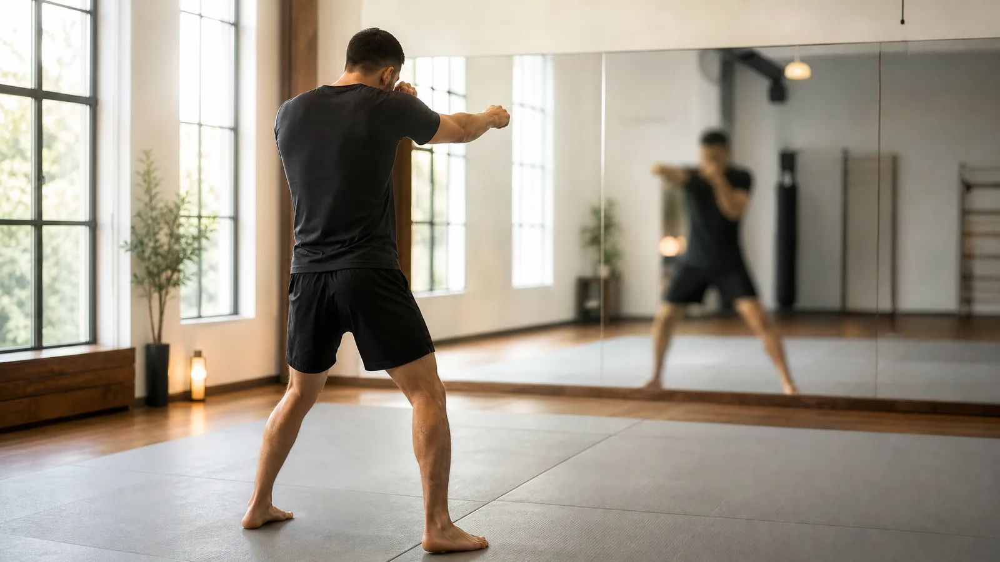
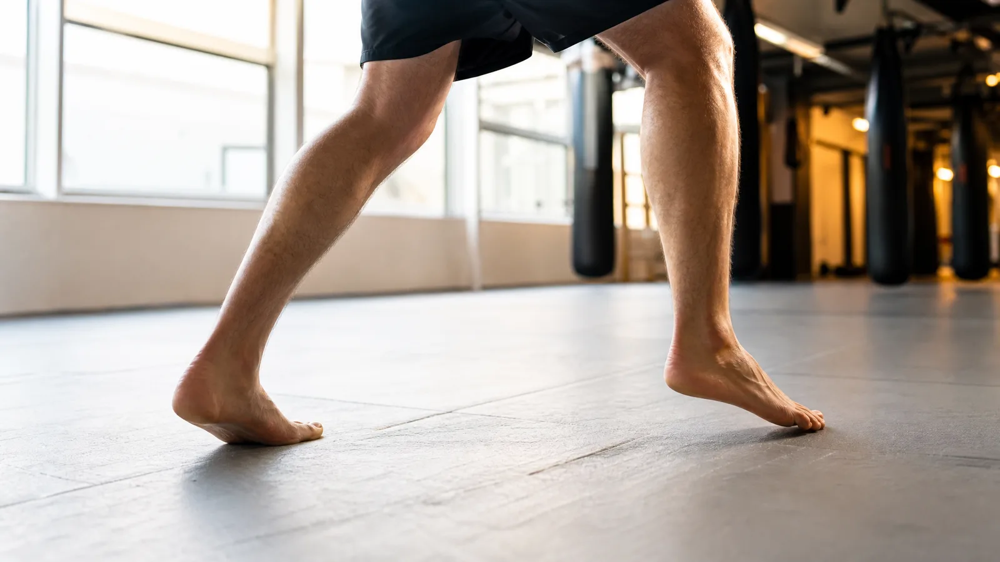

Schattenboxen ist die Übung, die in fast jeder Boxhalle läuft und von außen am wenigsten nach Training aussieht. Jemand steht vor dem Spiegel, schlägt in die Luft und tänzelt ein wenig hin und her. Wer es selbst ausprobiert, merkt nach einer Minute, dass mehr dahintersteckt: Die Schultern brennen, die Hände sacken ab, und die Füße wissen nicht recht, wohin.
Was Schattenboxen von Herumfuchteln unterscheidet, ist ein Plan. Hier bekommst du einen: wie du Platz, Spiegel und Timer einrichtest, drei kurze Runden mit je einer klaren Aufgabe, eine davon als Kickbox-Variante mit Tritten, und die Fehler, die fast alle Anfänger machen. Danach geht es um zwei häufige Fragen: wie viele Kalorien Schattenboxen verbraucht und ob Hanteln in den Händen etwas bringen. Am Ende steht ein Plan für die ersten vier Wochen.
Was ist Schattenboxen?
Schattenboxen ist Kampfsporttraining ohne Gegner und ohne Ziel. Das Digitale Wörterbuch der deutschen Sprache beschreibt es als Training, bei dem „Schläge, Schlagkombinationen, Tritte o. Ä. (gegen einen imaginären Gegner) ins Leere ausgeführt werden“ (DWDS). Du boxt also gegen jemanden, den es nur in deinem Kopf gibt. Im Englischen heißt die Übung shadow boxing oder shadowboxing.
Der Begriff hat noch zwei andere Bedeutungen. Als „chinesisches Schattenboxen“ wird im Deutschen auch Tai-Chi bezeichnet, genauer die chinesische Kampfkunst Taijiquan. Und im übertragenen Sinn meint Schattenboxen ein Scheingefecht gegen einen Gegner, der gar nicht da ist. In diesem Artikel geht es nur um die Trainingsform aus Boxen, Kickboxen und Muay Thai.
Eine Grenze gehört gleich an den Anfang: Beim Schattenboxen gibt es keinen Treffer. Du spürst nicht, ob die Distanz stimmt, ob dein Schlag sitzt oder wie sich ein Gegner bewegt, der zurückschlägt. Schattenboxen trainiert Bewegungsabläufe, Rhythmus und Gewohnheiten. Die Wirkung am Ziel trainierst du am Sandsack, an den Pratzen und im Partnertraining.
Wozu nutzen Profis Schattenboxen?
Im Leistungssport ist Schattenboxen ein fester Teil des Trainings: zum Aufwärmen, für Technik, Tempo und Koordination und zur Einstimmung auf einen bestimmten Gegner. Gut dokumentiert ist das im Trainerhandbuch des damaligen Amateurbox-Weltverbands AIBA. Trainerkommission und Akademie des Verbands haben es 2010 erarbeitet, als erstes einheitliches Handbuch für alle Mitgliedsverbände. Schattenboxen taucht darin auf rund 20 Seiten auf, in sehr unterschiedlichen Rollen.
Wofür das AIBA-Trainerhandbuch Schattenboxen einsetzt
| Einsatz | Was im Handbuch steht | Was du daraus mitnimmst |
|---|---|---|
| Aufwärmen | 10 Minuten Schattenboxen nach allgemeinen Übungen und Seilspringen, mittlere Intensität | Schattenboxen ist die Brücke vom Warmwerden zur Technik |
| Technik | Aufwärmrunden à 3 Minuten mit 30 Sekunden Pause, Schwerpunkt auf „Bewegung, Technik und Entspannung“ | Locker und langsam beginnen |
| Schnelligkeit | Tempowechsel auf Signal des Trainers; Schattenboxen auf engem Raum | Intervall-App mit Signalton |
| Koordination | Schattenboxen in der anderen Auslage | Ab und zu die Seite wechseln |
| Kraft | Schattenboxen mit sehr leichten Gewichten, auf weichem Untergrund oder im Wasser | Erst später, siehe Abschnitt zu Hanteln |
| Kampfvorbereitung | Teil des Aufwärmens vor dem Kampf, auch als Simulation des kommenden Kampfs | Dir einen konkreten Gegner vorstellen |
| Nach dem Kampf | Teil des Cool-downs | Locker auslaufen statt abrupt aufhören |
Quelle: AIBA Coaches Manual (2010 von Trainerkommission und Akademie der AIBA erarbeitet), S. 73 bis 75, 99, 138, 145, 175 und 193. Übersetzung und rechte Spalte von uns. Abgerufen im Oktober 2026.
Zwei Dinge fallen auf. Schattenboxen steht in fast jeder Trainingsphase, vom Grundlagenaufbau bis zum Kampftag. Und es ist fast nie Selbstzweck, sondern bekommt jedes Mal eine Aufgabe, etwa ein Tempo auf Signal oder eine bestimmte Auslage. In einem Trainingsbeispiel für die Wettkampfphase stehen im Hauptteil drei Runden à drei Minuten Schattenboxen mit je einer Minute Pause, gleichrangig neben drei Runden an den Pratzen. Dieses Prinzip, kurze Runden mit klarer Aufgabe, übernehmen wir weiter unten für die drei Einsteiger-Runden.
Dass sich Aufwärmen vor dem Boxen messbar lohnt, zeigt eine Studie mit sechs olympischen Amateurboxern (Cunniffe und Kollegen, 2017). Nach ihrem gewohnten Aufwärmprogramm sprangen sie im Schnitt 4,8 % höher, und auch die Kraft- und Leistungswerte im Oberkörper stiegen. Wer danach herumsaß, verlor den Effekt wieder: Erste Einbußen zeigten sich nach 15 Minuten, nach 25 Minuten lagen alle Werte auf dem Stand vor dem Aufwärmen. Für dich heißt das: Schattenboxen gehört direkt vor die Belastung, nicht eine halbe Stunde davor.
Was bringt Schattenboxen wirklich?
Schattenboxen trainiert vor allem saubere Bewegungsabläufe, Beinarbeit und Rhythmus, in schnellen Runden auch die Ausdauer. So setzen es Trainer ein. Wissenschaftlich direkt untersucht ist das kaum: Bei unserer Recherche in der Studiendatenbank PubMed haben wir keine Studie gefunden, die Schattenboxen für sich allein mit einer Kontrollgruppe vergleicht. Viele Treffer zum Stichwort „shadow boxing“ handeln dort übrigens von Tai-Chi.
Aus der Bewegungsforschung gibt es aber einen Hinweis, warum der vorgestellte Gegner mehr ist als ein Spleen. Eine große Meta-Analyse (Chua und Kollegen, 2021) hat 73 Studien mit 1.824 Teilnehmenden ausgewertet. Wer die Aufmerksamkeit auf die Wirkung einer Bewegung richtet, also nach außen, schnitt bei der Leistung und beim Lernen besser ab als jemand, der auf die eigenen Körperteile achtet. Das galt unabhängig von Alter und Könnensstufe. Übertragen aufs Schattenboxen heißt das: Dein Ziel ist das Kinn des vorgestellten Gegners, nicht dein eigener Ellbogen. Diese Übertragung stammt von uns; eine Studie speziell zum Schattenboxen gibt es dazu nicht.
Was Schattenboxen leisten kann und was nicht, lässt sich so zusammenfassen:
- Technik ohne Ablenkung. Kein Ziel bringt dich aus dem Konzept, du kannst jede Bewegung langsam und bewusst ausführen.
- Beinarbeit im freien Raum. Ein Sandsack hängt an einer Stelle, beim Schattenboxen bewegst du dich in alle Richtungen.
- Ausdauer in kleinen Dosen. Mit hohem Tempo wird es schnell anstrengend, mehr dazu im Abschnitt zu den Kalorien.
- Kein Ersatz für Training mit Ziel. Treffen, Distanzgefühl und die Reaktion auf einen echten Gegner lernst du nur mit Sandsack, Pratzen und Partner.
Was brauchst du zum Schattenboxen?
Du brauchst Platz für einen Schritt in jede Richtung, einen Timer und am Anfang am besten einen Spiegel. Handschuhe sind nicht nötig. Was sich später lohnt, steht in unserem Ratgeber Kickboxen Ausrüstung für Anfänger.
Platz und Boden
Stell dich in deine Grundstellung und streck einen Arm nach vorn und zur Seite aus. Wenn du dann noch einen Schritt vor, zurück und zur Seite machen kannst, ohne etwas zu berühren, reicht der Platz. Für die Runde mit Kicks brauchst du etwas mehr, weil ein Roundhouse-Kick seitlich ausholt. Achte auf den Boden: Socken rutschen auf Laminat und Fliesen. Besser ist barfuß auf einer festen Matte oder ein flacher Hallenschuh. Hängelampen und Regalkanten sind übrigens die einzigen Gegner, die beim Schattenboxen tatsächlich zurückschlagen.
Der Spiegel: Werkzeug, kein Bildschirm
Ein großer Spiegel, in dem du dich vom Kopf bis zu den Füßen siehst, hilft dir am Anfang bei der Kontrolle. Sind die Hände am Kinn? Bleibt das Kinn unten? Stehen die Füße so, wie sie sollen? Dauerhaft hineinstarren solltest du aber nicht. Aus dem Ballett, wo Spiegel zum Alltag gehören, gibt es dazu eine kleine Studie (Radell und Kollegen, 2003): zwei Anfängerklassen bei derselben Lehrerin, eine mit, eine ohne Spiegel. Nach 14 Wochen hatte sich nur die Klasse ohne Spiegel verbessert, und das auch nur in einer der beiden geprüften Übungsfolgen. Bei 64 jungen Ballettschülerinnen brachte der Spiegel auch für das Gleichgewicht keinen Vorteil (Notarnicola und Kollegen, 2014).
Beide Studien stammen aus dem Tanz und sind klein, auf das Boxen lassen sie sich nur vorsichtig übertragen. Unser Vorschlag für die Praxis: Nutze den Spiegel in der ersten Runde zur Kontrolle und dreh dich in Runde zwei und drei davon weg, damit dein Blick beim vorgestellten Gegner ist. Wenn du keinen Spiegel hast, film dich mit dem Handy und schau dir die Runde danach an.

Der Timer
Ein Rundentimer macht aus Herumprobieren ein Training. Eine Intervall-App mit Signalton reicht, notfalls die Stoppuhr am Handy. Für den Einstieg empfehlen wir das Format aus dem Kickbox-Wettkampf: Beim Weltverband WAKO dauert ein Kampf in allen Ringdisziplinen drei Runden à zwei Minuten mit je einer Minute Pause (WAKO Rules, Kapitel 7). Im olympischen Boxen sind es nach den Regeln von World Boxing in der Elite und bei den Junioren U19 drei Runden à drei Minuten, ebenfalls mit einer Minute Pause (World Boxing Competition Rules). Mit zwei Minuten anzufangen und später auf drei zu gehen, liegt deshalb nahe.
Wie läuft eine Einheit Schattenboxen ab?
Eine Einheit dauert rund 16 Minuten: fünf Minuten Aufwärmen, drei Runden à zwei Minuten mit je einer Minute Pause und drei Minuten Auslaufen. Jede Runde hat genau eine Aufgabe. So weißt du in jedem Moment, worauf du achtest, und nach der Einheit, was geklappt hat.
Eine Einheit Schattenboxen: 16 Minuten, drei Aufgaben
Unser Ablauf für Einsteiger. Rundenformat nach den Ringregeln der WAKO: drei Runden à zwei Minuten mit je einer Minute Pause (WAKO Rules, Kapitel 7, Artikel 4).
- Platz und Timer vorbereiten. Räum dir Platz für einen Schritt in jede Richtung frei, stell dich vor den Spiegel und stell den Timer auf drei Runden à zwei Minuten mit je einer Minute Pause.
- Fünf Minuten aufwärmen. Lauf auf der Stelle oder spring Seil, kreise Schultern und Hüfte und schlag in den letzten zwei Minuten die ersten Kombinationen mit halbem Tempo.
- Runde 1: Technik. Zwei Minuten nur Jab, Cross und Haken, langsam und vor dem Spiegel. Nach jedem Schlag kommt die Hand auf demselben Weg zurück ans Kinn.
- Runde 2: Beinarbeit. Zwei Minuten Schritte vor, zurück, zur Seite und Drehungen, vom Spiegel abgewandt. Die Füße kreuzen sich nie, geschlagen wird nur aus einem Schritt heraus.
- Runde 3: Kombinationen mit Kicks. Zwei Minuten kurze Kombinationen aus Schlägen und Tritten, etwa Jab, Cross und Roundhouse-Kick. Jede Kombination endet mit einer Abwehrbewegung.
- Drei Minuten auslaufen. Schattenboxe locker mit halbem Tempo weiter, atme ruhig und schüttle Schultern und Arme aus.
Beim Aufwärmen orientieren wir uns an den Trainingsplänen im AIBA-Handbuch: erst allgemein warm werden, dann boxspezifisch. Auch das Auslaufen steht so im Handbuch, dort gehört Schattenboxen nach dem Kampf zum Cool-down. Die Pausen zwischen den Runden verbringst du im Stehen oder Gehen und atmest ruhig, statt dich hinzusetzen.
Runde 1: Wie übst du beim Schattenboxen Technik?
In der ersten Runde zählt nur Sauberkeit: Jab, Cross und Haken, langsam und vor dem Spiegel, und nach jedem Schlag kommt die Hand zurück ans Kinn. Tempo spielt hier keine Rolle. Das AIBA-Handbuch legt den Schwerpunkt beim Schattenboxen im Aufwärmen auf „Bewegung, Technik und Entspannung“, und genau das ist die Aufgabe dieser Runde.
Stell dich in deine Grundstellung: Füße etwa schulterbreit und versetzt, das Gewicht auf beide Beine verteilt, die Hände am Kinn, die Ellbogen nah am Körper. Dann übst du drei Schläge:
- Jab: Die Führhand geht gerade nach vorn und auf demselben Weg zurück. Die andere Hand bleibt am Kinn.
- Cross: Die Schlaghand geht gerade nach vorn, hintere Hüfte und hintere Ferse drehen mit ein.
- Haken: Mit der Führhand, der Arm etwa rechtwinklig gebeugt, die Drehung kommt aus Hüfte und vorderem Fuß.
Wiederhole jede Technik erst einzeln, dann als Zweier- und Dreierkombination. Atme bei jedem Schlag kurz aus; wer die Luft anhält, ist nach einer Minute außer Atem. Prüf im Spiegel immer wieder: Ist die Hand, die nicht schlägt, am Kinn? Bleibt das Kinn unten? Geht der Arm fast, aber nicht ganz in die Streckung? Wenn eine Antwort Nein lautet, wirst du langsamer, nicht schneller.
Runde 2: Wie trainierst du Beinarbeit ohne Gegner?
In der zweiten Runde bewegst du dich zuerst und schlägst nur aus einem Schritt heraus. Dreh dich dafür vom Spiegel weg und stell dir einen Gegner vor, der sich ebenfalls bewegt. In der Halle sehen wir immer wieder, dass Anfänger genau diese Übung auslassen: Sie bleiben auf der Stelle stehen und schlagen nur.
Die Grundregeln sind einfach. Nach vorn setzt der vordere Fuß zuerst, der hintere zieht nach. Nach hinten setzt der hintere Fuß zuerst. Zur Seite bewegt sich zuerst der Fuß, der in die Richtung zeigt, in die du willst. Die Füße kreuzen sich nie, und der Abstand zwischen ihnen bleibt ungefähr gleich. Dazu kommt die Drehung, im Englischen Pivot: Auf dem Ballen des vorderen Fußes drehst du dich ein Stück zur Seite, als würdest du einem Angriff ausweichen und einen neuen Winkel suchen.

Ein einfaches Muster für diese Runde: zwei Schritte vor, Jab. Zwei Schritte zurück. Ein Schritt zur Seite, Drehung, Jab, Cross. Dann das Ganze in die andere Richtung. Bleib dabei auf den Fußballen, nicht auf den Fersen. Wenn du merkst, dass du nur noch auf der Stelle stehst und schlägst, hast du die Aufgabe aus den Augen verloren. Dann geh zwei, drei Atemzüge lang nur, ohne zu schlagen, und fang neu an.
Runde 3: Wie baust du Kicks ins Schattenboxen ein?
In der dritten Runde verbindest du Schläge und Tritte zu kurzen Kombinationen, und jede Kombination endet mit einer Abwehrbewegung. Das ist die Kickbox-Variante, und hier wird es zum ersten Mal richtig anstrengend. Vier Kombinationen reichen für den Anfang:
- Jab, Cross, Roundhouse-Kick mit dem hinteren Bein. Wie der Kick aufgebaut ist und warum das Standbein mitdrehen muss, erklärt unser Artikel zum Roundhouse-Kick.
- Jab, Teep mit dem vorderen Bein: der gerade Fußstoß nach vorn, der einen Gegner auf Abstand hält.
- Cross, Haken, Low Kick mit dem hinteren Bein, gezielt auf die Höhe des gegnerischen Oberschenkels.
- Jab, Cross, abtauchen und mit einem Schritt zur Seite raus aus der Linie.
Bei Tritten in die Luft gilt dieselbe Regel wie bei Schlägen: Das Bein kommt kontrolliert in die Grundstellung zurück, statt nach dem Tritt auszupendeln. Wer nach jedem Kick zwei Sekunden braucht, um wieder sicher zu stehen, tritt zu hoch oder zu schnell. Fang mit Tritten auf Hüfthöhe an und steigere die Höhe erst, wenn du nach jedem Kick sofort wieder in Deckung stehst.
Wenn du Boxen ohne Tritte trainierst, ersetzt du die Kicks durch Körperhaken und Kombinationen mit Kopfbewegung. Grundschläge und einen Plan für 20 Minuten findest du in unserem Artikel zum Boxtraining zu Hause.
Welche Fehler machen Anfänger beim Schattenboxen?
In unserer Trainingspraxis sind es vor allem drei: Die Hände fallen, es gibt keine Abwehr, und die Arme werden mit vollem Tempo ins Leere durchgestreckt. Der dritte Fehler ist der einzige, der auf Dauer wehtun kann. Die Tabelle zeigt sie zusammen mit vier weiteren Klassikern.
Sieben typische Fehler beim Schattenboxen und wie du sie abstellst
| Fehler | Woran du ihn erkennst | So stellst du ihn ab |
|---|---|---|
| Hände fallen | Nach dem Schlag bleibt die Hand vorn oder hängt auf Brusthöhe, vor allem gegen Ende der Runde | Hand auf demselben Weg zurück ans Kinn; im Spiegel auf die Hand achten, die nicht schlägt |
| Keine Abwehr | Nur Angriff, nach der Kombination bleibst du stehen | Jede Kombination endet mit Abtauchen, Block oder Seitschritt |
| Arm ins Leere durchgestreckt | Der Arm schnappt mit vollem Tempo in die Streckung | Kurz vor der Streckung aktiv zurückholen, Tempo erst später |
| Stehen wie angewurzelt | Die Füße bewegen sich nur zwischen den Kombinationen | Runde 2 ernst nehmen: kein Schlag ohne Schritt |
| Füße kreuzen | Beim Seitschritt überkreuzen sich die Beine, du stehst kurz wackelig | Zuerst den Fuß bewegen, der in Bewegungsrichtung zeigt |
| Luft anhalten | Gepresste Atmung, nach einer Minute außer Atem | Bei jedem Schlag kurz ausatmen |
| Zu früh zu schnell | Sobald das Tempo steigt, werden die Schläge schlampig | Tempo nur in Runde 3 oder in eigenen Intervallen |
Zusammenstellung aus unserer Trainingspraxis. Was die Sportmedizin zu den Ellbogen sagt, steht weiter unten in diesem Abschnitt.
Die Hände fallen
Das ist der Klassiker, und er hat einen einfachen Grund: Die Schultern werden müde, und ohne Gegner, der die Lücke bestraft, merkst du es nicht. In der ersten Runde vor dem Spiegel sieht alles sauber aus, in der dritten hängt die Führhand plötzlich auf Brusthöhe. Hilfreich ist eine feste Regel: Die Hand kehrt nach jedem Schlag auf demselben Weg zurück, auf dem sie gekommen ist. Schau in der ersten Runde nicht auf die schlagende Hand, sondern auf die, die am Kinn bleiben soll.
Keine Abwehr
Ohne Gegner vergisst man leicht, dass er zurückschlägt. Viele Anfänger schlagen eine Kombination nach der anderen und bleiben danach mit erhobenem Kinn genau dort stehen, wo der Konter landen würde. Deshalb gilt in Runde drei: Keine Kombination endet mit einem Schlag. Sie endet mit Abtauchen, einem Block oder einem Schritt aus der Linie.
Warum Schläge ins Leere die Ellbogen belasten können
Am Sandsack bremst der Sack deinen Schlag. In der Luft muss das dein eigener Körper übernehmen, und wenn die Muskeln den Arm nicht rechtzeitig abfangen, endet die Bewegung im Ellbogengelenk. Sportmediziner kennen das aus dem Profiboxen. Eine niederländische Fallserie (Valkering und Kollegen, 2008) beschreibt fünf Profiboxer mit einer Einklemmung an der Rückseite des Ellbogens. Als häufigen Auslöser nennen die Autoren eine Überstreckung durch einen Schlag, der sein Ziel verfehlt. Eine britische Fallserie mit sieben Profiboxern (Robinson und Kollegen, 2017) fand solche Engstellen an Vorder- und Rückseite des Ellbogens. Alle kämpften in normaler Auslage, und mit einer Ausnahme war der linke Ellbogen betroffen, also der Arm, der den Jab schlägt.
Das sind kleine Fallserien aus dem Profisport und keine Aussage über Hobbysportler. Eine Überstreckung beim Schlag ins Leere kann aber auch beim Schattenboxen passieren, wenn du mit vollem Tempo in die Luft schlägst. Hol den Arm deshalb kurz vor der vollen Streckung aktiv zurück, steigere das Tempo erst, wenn die Technik sitzt, und achte beim Jab besonders darauf. Wenn dein Ellbogen nach dem Training schmerzt oder sich nicht mehr ganz strecken lässt, mach Pause und lass das ärztlich abklären.
Wie viele Kalorien verbrennt Schattenboxen?
Wie viel du beim Schattenboxen verbrauchst, hängt vor allem von deinem Tempo und deinem Körpergewicht ab. Eine Messung speziell für Schattenboxen haben wir nicht gefunden. Auch im Compendium of Physical Activities, der wissenschaftlichen Referenzliste für den Energieverbrauch von Aktivitäten, fehlt ein eigener Eintrag. Am nächsten kommen „Kampfkunst, langsames Tempo, Anfänger“ mit 5,3 MET und „Kickboxen“ mit 7,3 MET. Boxen in der virtuellen Realität mit hoher Intensität führt das Compendium mit 7,9 MET (Kategorie Conditioning Exercise).
Ausrechnen musst du das nicht selbst. Unser Artikel zum Kalorienverbrauch beim Kickboxen rechnet die passenden Einträge in einer Tabelle für 55 bis 100 Kilo Körpergewicht durch. Eine ruhige Technik- und Beinarbeitsrunde liegt nach unserer Einschätzung eher bei den Werten für langsames Training, eine schnelle Runde mit Kicks eher beim Kickboxen allgemein.
Wie stark das Tempo zählt, zeigt eine Studie aus Montreal (Arseneau und Kollegen, 2011) mit neun erfahrenen Amateurboxern. Am Sandsack lag ihre Sauerstoffaufnahme bei 60 Schlägen pro Minute bei 39,8 % ihres gemessenen Maximums, bei 180 Schlägen pro Minute bei 61,7 %. Pratzenarbeit und nachgestelltes Sparring lagen mit 66,1 und 69,7 % noch darüber. Schattenboxen wurde dabei nicht gemessen. Die Richtung ist trotzdem klar: Dieselbe Übung kann locker oder hart sein, je nachdem, wie schnell du arbeitest.
Tempo macht den Unterschied: Sauerstoffaufnahme bei Boxübungen
Anteil der maximalen Sauerstoffaufnahme (VO₂peak), Mittelwerte von neun erfahrenen Amateurboxern. Quelle: Arseneau, Mekary & Léger (2011), Journal of Strength and Conditioning Research, PMID 21217532. Schattenboxen wurde in dieser Studie nicht gemessen.
Wenn du abnehmen willst, ist Schattenboxen vor allem eine Einheit, die du ohne Ausrüstung jeden zweiten Tag machen kannst. Ob du dabei Gewicht verlierst, entscheidet die Summe aus Bewegung und Ernährung über Wochen, nicht eine einzelne Übung.
Ist Schattenboxen mit Hanteln sinnvoll?
Für Anfänger nicht. Für Fortgeschrittene kann ein kurzer, getrennter Block mit sehr leichten Gewichten sinnvoll sein, die Studienlage dazu ist aber dünn. Was es gibt, spricht eher dafür, Gewichte gelegentlich als Zusatz zu nutzen, statt in jeder Runde Hanteln zu halten.
Was dafür spricht
Leichte Gewichte in der Hand erhöhen den Energieverbrauch. Eine Übersichtsarbeit (Auble und Schwartz, 1991) beziffert das Plus bei Handgewichten von 0,45 bis 1,36 kg auf 3 bis 155 % gegenüber derselben Übung ohne Gewicht. Wie groß es ausfällt, hängt davon ab, wie schwer das Gewicht ist und wie weit du es bewegst. Gemessen wurde das allerdings beim Gehen, Laufen und Step-Training, nicht beim Boxen.
Auch im Boxtraining tauchen Gewichte auf. Das AIBA-Handbuch nennt Schattenboxen mit sehr leichten Gewichten als boxspezifische Kraftübung und führt in einem Trainingsbeispiel für die direkte Wettkampfvorbereitung zwei Runden Schattenboxen mit Hanteln auf. Im selben Kapitel steht aber auch, dass Krafttraining mit schweren Gewichten in den frühen Trainingsphasen nicht empfohlen wird. Eine kleine Studie aus Thailand (Tengku Sulaiman, 2026) ließ zehn Muay-Thai-Kämpfer auf Elite-Niveau zwei Wochen lang dreimal pro Woche Intervalle trainieren: 15 Sekunden Schattenboxen mit 0,5 bis 1 kg schweren Handschuhen, dann 15 Sekunden Roundhouse-Kicks gegen einen Sandsack. Ihre anaerobe Leistung stieg stärker als in der Kontrollgruppe. Weil beides kombiniert wurde, lässt sich der Effekt aber nicht den Gewichten allein zuschreiben. Die Gruppen waren klein, und die Belastung wurde nicht gemessen.
Was dagegen spricht
Der Schlag wird langsamer. Eine Übersichtsarbeit zur Geschwindigkeitsspezifität im Krafttraining (Behm und Sale, 1993) kommt zu dem Schluss, dass Kraft am stärksten bei oder nahe der Geschwindigkeit zunimmt, mit der trainiert wird. Den größten Einfluss hat dabei womöglich die Absicht, sich schnell zu bewegen. Wer mit Hanteln gemächlich in die Luft drückt, trainiert also nicht den schnellen Schlag.
Dazu kommen die Ellbogen. Mehr Masse in der Hand bedeutet mehr Schwung, den du am Ende des Schlags abbremsen musst, und genau dieses Abbremsen ist beim Schattenboxen der Schwachpunkt. Außerdem bringt ein leichtes Gewicht weniger, als man denkt: In einer kleinen Pilotstudie mit Rollstuhlboxern, die in der virtuellen Realität boxten, erhöhten Handgewichte von 0,5 kg die Belastung nicht signifikant (Polechoński und Kollegen, 2024). Handgewichte können Puls und Blutdruck etwas stärker ansteigen lassen; in den Studien war das nicht einheitlich und meist gering. Wer eine Herz-Kreislauf-Erkrankung hat, klärt Training mit Gewichten trotzdem vorher ärztlich ab. Zur Vorsicht rät in diesem Fall auch die Übersicht von Auble und Schwartz.
Gewichte in der Hand: was Studien gemessen haben
| Studie | Wer und was | Gewicht | Ergebnis |
|---|---|---|---|
| Graves u. a., 1988 | 12 untrainierte junge Männer, Gehen auf dem Laufband | 1,36 kg Handgewichte | Sauerstoffaufnahme 30,4 statt 26,6 ml/kg/min, Puls 161 statt 147 |
| Auble & Schwartz, 1991 | Übersichtsarbeit: Gehen, Laufen, Step-Training | 0,45 bis 1,36 kg | 3 bis 155 % mehr Energieverbrauch, je nach Gewicht und Bewegungsweg |
| Polechoński u. a., 2024 | Rollstuhlboxer, Boxtraining in der virtuellen Realität (Pilotstudie) | 0,5 kg | keine signifikant höhere Intensität |
| Jin u. a., 2025 | 18 Amateurboxer, schlagähnliche Hantelübungen vor einem Schlagtest | 2 bis 8 % der Last für fünf Wiederholungen im Bankdrücken | schnellere Schläge 8 bis 12 Minuten danach; keine Kontrollbedingung |
| Tengku Sulaiman, 2026 | 20 Muay-Thai-Kämpfer auf Elite-Niveau, zwei Wochen Intervalle | Handschuhe mit 0,5 bis 1 kg | mehr anaerobe Leistung als die Kontrollgruppe; kombiniert mit Kicks gegen den Sandsack |
Quellen: PubMed, Abstracts und frei verfügbare Volltexte im Oktober 2026 geprüft (Links unten). Keine dieser Studien hat Schattenboxen mit und ohne Hanteln direkt miteinander verglichen.
Kurzfristig scheinen leichte, explosive Hantelübungen vor dem Schlagen etwas zu bringen: 18 Amateurboxer schlugen acht bis zwölf Minuten nach schlagähnlichen Übungen mit leichten Hanteln schneller (Jin und Kollegen, 2025). Eine Kontrollbedingung fehlte allerdings, das schreiben die Autoren selbst. Wenn überhaupt, spricht das für Gewichte vor dem Schattenboxen, nicht in jeder Runde.
Unsere Empfehlung
- In den ersten Monaten ohne Gewichte. Die Technik muss erst ohne Last sitzen.
- Wenn überhaupt, dann sehr leicht. In den Studien lagen die Handgewichte zwischen 0,45 und 1,36 kg.
- Nie in der Technikrunde. Gewichte gehören in einen eigenen kurzen Block, und auch mit Gewicht bleibt der Arm vor der vollen Streckung.
- Zum Schluss ohne Gewicht. Boxe nach dem Block eine Runde mit vollem Tempo ohne Hanteln, damit die schnelle Bewegung das Letzte ist, was du übst.
Wie oft solltest du schattenboxen? Ein Wochenplan
Für den Einstieg sind drei Einheiten pro Woche an nicht aufeinanderfolgenden Tagen ein guter Rhythmus. Dazwischen bleibt Zeit für Krafttraining und Erholung. Zur Einordnung: Die Weltgesundheitsorganisation empfiehlt Erwachsenen pro Woche 150 bis 300 Minuten Bewegung mit moderater oder 75 bis 150 Minuten mit hoher Intensität, dazu an mindestens zwei Tagen Krafttraining für alle großen Muskelgruppen (Bull und Kollegen, 2020). Drei Einheiten à 16 Minuten ergeben 48 Minuten. Schattenboxen deckt damit einen Teil ab, reicht allein aber nicht.
Wochenplan Schattenboxen für die ersten vier Wochen
| Woche | Einheiten | Runden | Runde / Pause | Neu dazu |
|---|---|---|---|---|
| Woche 1 | 3 | 3 | 2 Min / 1 Min | Technik, Beinarbeit, Kombinationen mit Kicks |
| Woche 2 | 3 | 4 | 2 Min / 1 Min | 4. Runde: Tempowechsel auf Signal |
| Woche 3 | 3 | 3 | 3 Min / 1 Min | Rundenlänge wie im olympischen Boxen |
| Woche 4 | 3 | 4 | 3 Min / 1 Min | 4. Runde: andere Auslage |
Unser Vorschlag. Rundenlängen nach WAKO (2 Minuten) und World Boxing (3 Minuten), Zusatzaufgaben nach dem AIBA-Trainerhandbuch. Aufwärmen und Auslaufen kommen jeweils dazu.
Eine Woche kann so aussehen: Montag, Mittwoch und Freitag Schattenboxen, Dienstag und Samstag Krafttraining mit dem eigenen Körpergewicht, etwa Liegestütze, Kniebeugen und Übungen für den Rumpf, an den übrigen Tagen Spazierengehen, Radfahren oder frei. Wenn Schultern oder Ellbogen nach dem Training länger als einen Tag wehtun, mach eine Runde weniger oder leg einen zusätzlichen freien Tag ein.
Die neuen Aufgaben in Woche zwei und vier stammen aus dem AIBA-Handbuch. Für den Tempowechsel stellst du eine Intervall-App so ein, dass sie alle 20 Sekunden piept; dann schlägst du zehn Sekunden mit vollem Tempo und kehrst danach in dein normales Tempo zurück. Die Runde in der anderen Auslage fühlt sich anfangs ungelenk an. Im Handbuch steht sie deshalb unter Koordination.
Was wir in der Halle beobachten
Unsere Trainer stehen seit 2006 in der Halle. Heute trainieren jeden Monat über 1.500 Menschen offline mit ihnen. Was folgt, sind Beobachtungen aus der Trainingspraxis, keine Studienergebnisse:
- Anfänger schauen im Spiegel auf ihre Faust. Der Blick gehört nach vorn, auf das Kinn des vorgestellten Gegners. Die eigene Faust siehst du ohnehin aus dem Augenwinkel.
- Die dritte Runde verrät die Deckung. Was in Runde eins vor dem Spiegel sauber aussieht, sackt ab, sobald es anstrengend wird. Deshalb kommt die Runde mit Kicks zuletzt: Sie zeigt dir, wo deine Deckung steht, wenn du müde bist.
- Wer lange nur schattenboxt, erschrickt beim ersten Pratzentraining. In der Luft trifft jeder Schlag. Am Ziel merkst du, dass du einen halben Schritt zu weit weg stehst oder dass der Haken zu kurz ist.
- Musik hilft beim Durchhalten, macht aber berechenbar. Wer immer im Takt schlägt, schlägt im Sparring auch im Takt. Bau bewusst Pausen und Tempowechsel ein.
- Zwei Minuten werden fast immer unterschätzt. Nach der ersten Runde mit Kicks fragt kaum noch jemand, ob Schattenboxen überhaupt Training ist.
Das Wichtigste in vier Sätzen
Schattenboxen ist Training gegen einen vorgestellten Gegner, das Boxtrainer zum Aufwärmen und für Technik, Tempo und Koordination einsetzen, und es bringt nur dann etwas, wenn jede Runde eine klare Aufgabe hat. Für den Einstieg reichen drei Runden à zwei Minuten mit einer Minute Pause: Technik vor dem Spiegel, Beinarbeit vom Spiegel weg, zum Schluss Kombinationen mit Kicks und Abwehr. Die Hände bleiben oben, jede Kombination endet mit einer Abwehr, und die Arme werden nie mit vollem Tempo ins Leere gestreckt, weil Fallserien aus dem Profiboxen genau darin einen Auslöser für Ellbogenbeschwerden sehen. Hanteln brauchst du am Anfang nicht, und auch beim Kalorienverbrauch entscheidet dein Tempo mehr als jedes Zusatzgewicht.